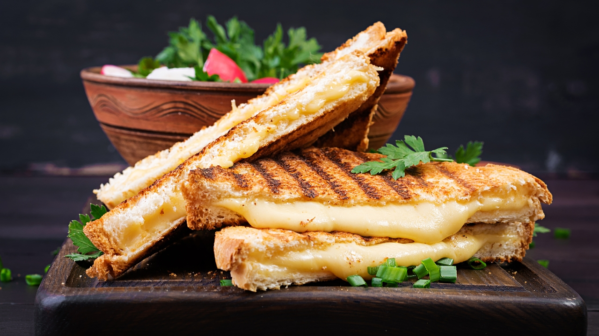

The Aristocratic Cheese Toastie

Description
This is not just any cheese toastie, it's the epitome of British comfort food, elevated to aristocratic heights. Think of the finest cheeses, the most sumptuous bread, and a grilling technique passed down through generations of toastie connoisseurs.
Ingredients
- 2 slices of bloomer bread, thick-cut and worthy of a duke
- A mix of mature cheddar and stilton, because two cheeses are better than one
- A smear of Branston pickle, for that authentic British tang
- A pad of butter, because everything's better with butter
- A sprinkle of fresh thyme leaves, just to be fancy
- A dash of Worcestershire sauce, for a bit of a kick
Steps
- Layer the cheeses generously on one slice of bread, as if building a monument.
- Add a smear of Branston pickle, a sprinkle of thyme, and a dash of Worcestershire sauce.
- Top with the second slice of bread, creating a sandwich fit for a lord.
- Butter the outside of the bread, as one would butter up royalty.
- Grill to perfection, achieving a golden-brown crust and a melted cheese centre.
- Slice diagonally, because we're not savages, and serve on a silver platter.
These recipes celebrate the best of British comfort food while adding a touch of gourmet extravagance. Enjoy!